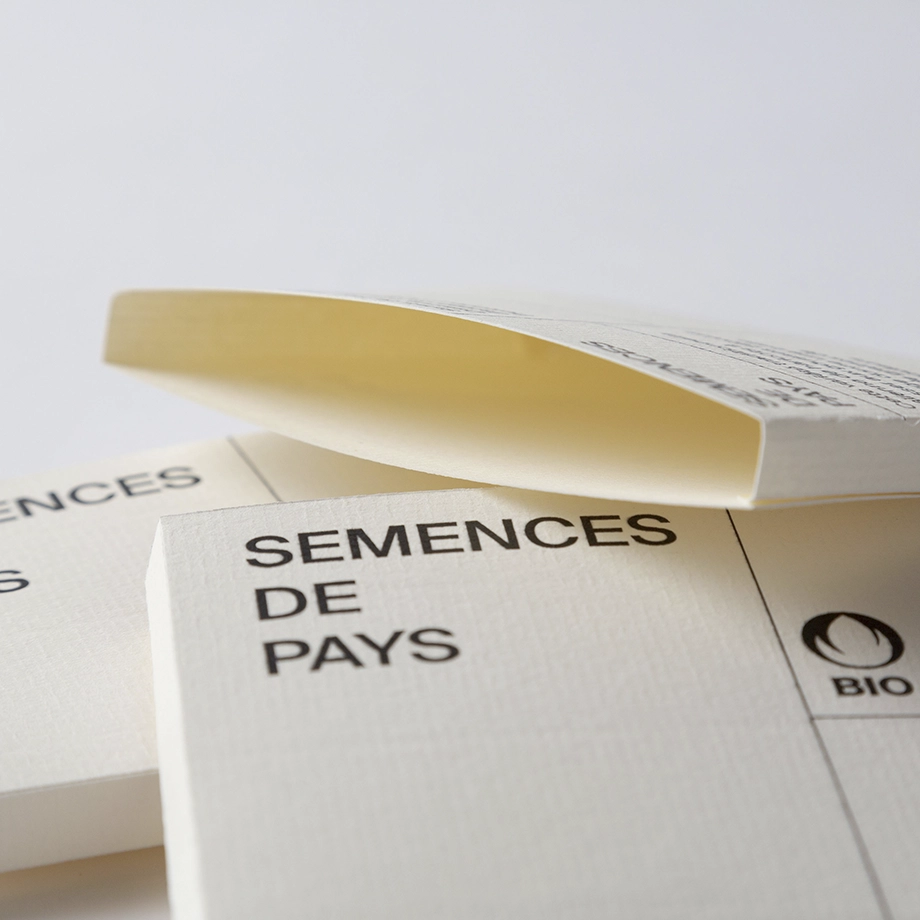

↖ Wallace et Joël, récolte de graines de coriandre, Chêne-Bourg, août 2020
© Elisa Larvego
Semences de pays développe une production de semences reproductibles, rustiques et adaptées à une agriculture biologique proche des cycles de la nature, en collaboration avec les initiatives nourricières de proximité.
↖ Pollinisation de la grande mauve, Chêne-Bourg,
juin 2020
© Christian Lutz

Découvrez nos trésors de biodiversité sur le shop!
↖ Wallace, séchage de graines de bleuet, Chêne-Bourg, août 2020 © Elisa Larvego
Chez Mamie
→ Rue des Rois 171204 Genève

Le Topinambour
→ Avenue William-Fraisse 91006 Lausanne
Ferme du Joran
→ Chemin des Philosophes 151350 Orbe
Le Grainier
→ Route des Mines de Sel1880 Bex
Nouvelle Terre
→ Rue du Grand-Verger 121920 Martigny
↖ Haricot kilomètre des Açores et betterave Noire de Lausanne, Chêne-Bourg, juillet 2020 © Christian Lutz
↗ Herjan, stagiaire, sélection de carotte à la ferme de la Touvière, Meinier, novembre 2019 © Elisa Larvego